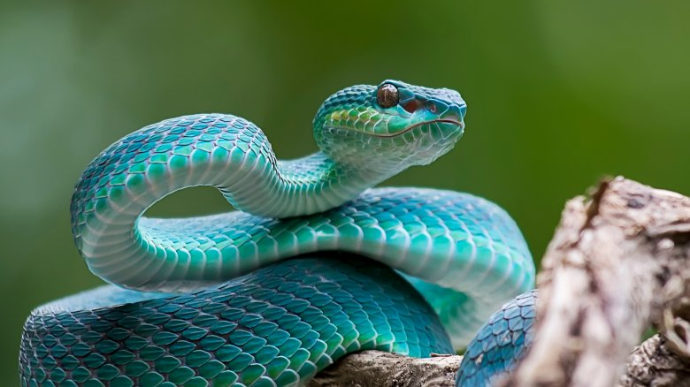

5 najnebezpečnejsích živočíchov na svete
Dokumentacia
Domov
O stránke
Táto stánka, 5 najnebezpečnejsích živočíchov na svete, sa zaoberá piatimi živočíchmi,
ktorý majú na svedomí mnoho úmrtí.
Rebríček
Tabuľka
| Živočích |
Počet úmrtí |
| Komár |
750 000 |
| Ľudia |
437 000 |
| Hady |
100 000 |
| Psi |
35 000 |
| Sladkovodný slimák |
20 000 |
1. Komár
Tento otravný hmyz má vďaka svojej schopnodti, ciciať krv a prenášať tak ochorenia, na svedomí mnoho úmrtí. Hoci sa zdá ako neškodný je veľmi nebezpečný a nebude váhať
vás uštipnúť. Komáre majú na svedomí približne 750 000 obetí za rok. Tieto tvory prenášajú ochorenia ako je malária, žltá horúčka či zika,
ktoré prinášajú bolesťivú smrť.
2. Ľudia
Priemerne 437 000 osôb umrie rukou iného človeka. Vo svete plnom nenávisti, vojny, vrážd a teroristických útokov sa ani nemôžme čudovať, že ľudia ma jú na svedomí
toľko mŕtvych.
3. Hady
Asi jedno z viac nenávidených zvierat na svete sa vachádza na tretiom mieste v našom rebríčku. Má na svedomí asi 100 000 úmrtí. Niektoré ťažké uhryznutia niekedy
nie su ani oznámené. To by znamenalo, že by sa číslo úmrtí mohlo zvýšiť o ďalších 50 000.
4. Psi
Nie vždy je pes najlepším priatelom človeka. Psy zabijú priemerne 35 000 osôb za rok. Toto číslo nie je také vysoké len kôli domácim psom ale aj tulákom, ktorý
sú chorí a prenášajú besnotu, napadnutím človeka tak toto ochorenie prenesú na nich.
5. Sladkovodný slimák
Ak sa čudujete ako môže byť vodný slimák hrozbou tak mám pre vás vysvetlenie. Nejde o samotného slimáka ale o parazitov ktoý sa nachádzaju na nich. Vďaka znečisteniu
vôd sa parazity premnožujú a usádzajú sa týchto malých tvoroch. Následnne ak sa dostaneme do kontaktu so slimákom napadnutým týmito parazitmi, tak sa prenášajú na nás.
Tieto parazity sú z rodu Schistosoma, ktoré u ľudí vyvolávajú príznaky ako pri inej bakterialnej infekcií (bolesť hlavy, brucha, horúčky, triašky, zvracanie, kŕče...).


